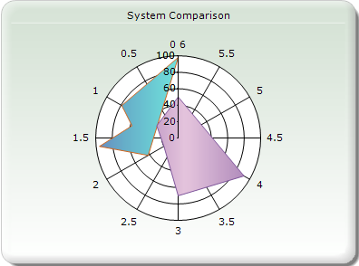
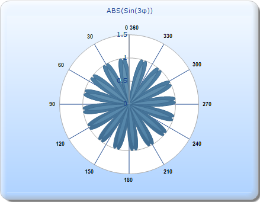

A Polar chart is a circular graph, where data is displayed in terms of values and angles, which are expressed as X and Y axes on the graph. The X value defines the angle at which the data points are plotted, usually on the perimeter of the circle. The Y value defines the distance of the data points from the center of the graph, starting at 0.
This allows a visual comparison between the several quantitative or qualitative aspects of a data and several data points drawn by using the same axes (poles).

Figure 141: Polar chart
Example
The following example shows how a Polar chart can be used. The following table provides the data set for the chart:
|
Angle in Degrees |
ABS(Sin(3x)) |
|
45 |
0.70 |
|
90 |
-1 |
|
135 |
0.70 |
|
180 |
0 |
|
225 |
-0.70 |
|
270 |
1 |
|
315 |
-0.70 |
|
360 |
0 |
In this example, the angles are plotted on the X-axis (0-360). The Y axis points are plotted from 0-1.5. The values of ABS(Sin(3x)) lie between 0-1, hence it can be seen that most of the data points are restricted to the inner circle (till 1) falling under various circular sectors.

Figure 142: Example of a Polar chart
Chart Details
The following table provides details pertaining to the Polar chart:
|
Details | |
|
Number of series of Y values per point |
One |
|
Number of Series |
Two |
|
Cannot be Combined with |
Any other type. |
 Creating a Polar
Chart
Creating a Polar
Chart